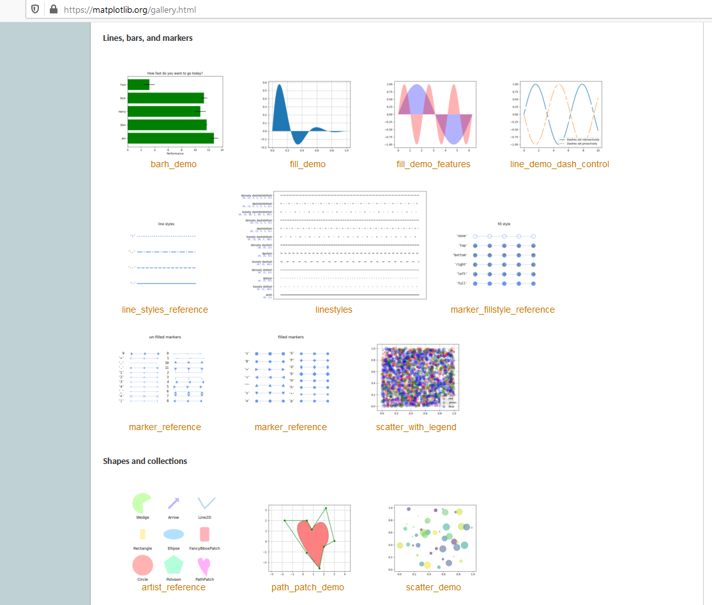

Introduction to Matplotlib
Plotting with Python
What is Matplotlib?
Matplotlib is a powerful and widely-used Python library for creating static, animated, and interactive visualizations.
Why do we need plotting? - Visualize patterns in data - Communicate results effectively - Explore relationships between variables - Present findings to others
It provides a flexible framework for generating a wide variety of plots and charts, making it a popular choice for data analysis and scientific research.
Getting Started
Question: How do we import matplotlib for plotting?
The most widespread convention is to use the shorthand plt to refer to the pyplot submodule. This was created to replicate the functionality of MATLAB, which many early Python adopters were familiar with.
Two Main Approaches
Problem: There are different ways to create plots in matplotlib. Which should we choose?
Pyplot Interface
- MATLAB-style syntax
- Quick and simple for basic plots
- Often seen in online examples
Object-Oriented Approach
- More modern and explicit
- Better control over complex plots
- Recommended approach
Understanding Figure and Axes
Question: What’s the difference between a Figure and Axes?
#| caption: "▶ Ctrl/Cmd+Enter | ⇥ Ctrl/Cmd+] | ⇤ Ctrl/Cmd+["
#| echo: true
#| output-location: fragment
# Create a Figure (canvas) and Axes (plotting area)
fig, ax = plt.subplots(figsize=(8, 4))
# Generate sample data
x = np.linspace(0, 10, 50)
y = np.sin(x)
ax.plot(x, y)
ax.set_title("Understanding Figure vs Axes")
plt.show()- Figure: The entire canvas - like a piece of paper
- Axes: The plotting area with x-y coordinates - where data goes
What Types of Plots Can We Create?
Problem: We have different types of data - how do we choose the right visualization?
Continuous Relationships
When to use: Time series, correlations
Distributions
When to use: Frequency distributions, comparisons
Real Example: Combining Visualizations
Scenario: We have measurements and a fitted model. How do we show both?
#| caption: "▶ Ctrl/Cmd+Enter | ⇥ Ctrl/Cmd+] | ⇤ Ctrl/Cmd+["
#| echo: true
#| output-location: fragment
# Create sample data representing real measurements vs theory
np.random.seed(42)
x = np.arange(1, 56, 5)
y1 = x**2 # Theoretical relationship
y2 = x**2 + np.random.normal(size=len(x))*100 # Noisy measurements
fig, ax = plt.subplots(figsize=(8, 5))
ax.plot(x, y1, label='Theoretical model')
ax.scatter(x, y2, label='Experimental data')
ax.legend()
ax.set_xlabel("Input variable")
ax.set_ylabel("Response")
plt.show()Key insight: You can overlay different plot types to tell a complete story!
Making Plots Publication-Ready
Problem: Default plots often look bland. How do we make them professional?
#| caption: "▶ Ctrl/Cmd+Enter | ⇥ Ctrl/Cmd+] | ⇤ Ctrl/Cmd+["
#| echo: true
#| output-location: fragment
fig, ax = plt.subplots(figsize=(8, 5))
# Same data, but now with intention behind each choice
ax.plot(x, y1, color="slategrey", linestyle="--",
linewidth=2, label="Theoretical model")
ax.scatter(x, y2, color="indianred", marker='+', s=60,
label="Experimental data")
# Clear, informative labels
ax.set_xlabel("Distance (m)", fontsize=12)
ax.set_ylabel("Force (N)", fontsize=12)
ax.set_xlim(0, 52)
ax.legend(fontsize=10)
ax.grid(True, alpha=0.3) # Subtle grid helps reading values
plt.show()Key principle: Every visual choice should serve the reader’s understanding!
Design Choices Matter
Question: With so many options, how do we choose colors, markers, and styles effectively?
Colors
- Named colors:
"red","blue"(readable) - Hex codes:
"#FF5733"(precise) - RGB tuples:
(0.2, 0.4, 0.6)(programmatic)
Tip: Choose colors that work for colorblind readers!
Line Styles
"-"solid (default, safe choice)"--"dashed (good for models/predictions)":"dotted (for reference lines)"-."dash-dot (for secondary data)
Markers
"o"circle (classic, clear)"s"square (when you need distinction)"^"triangle (directional data)"+"plus (dense data, less visual weight)"*"star (highlighting special points)
Size & Transparency
s=60(scatter size - make readable!)alpha=0.7(transparency for overlapping data)
Rule of thumb: Clarity over creativity!
Comparing Distributions
Scenario: You have two datasets with different sample sizes. How do you compare them fairly?
#| caption: "▶ Ctrl/Cmd+Enter | ⇥ Ctrl/Cmd+] | ⇤ Ctrl/Cmd+["
#| echo: true
#| output-location: fragment
# Real problem: comparing groups with different sizes
np.random.seed(42)
control_group = np.random.normal(0, 1, 5000) # Large control group
treatment_group = np.random.normal(0.5, 1.2, 500) # Smaller treatment group
fig, ax = plt.subplots(figsize=(8, 5))
bins = np.arange(-4, 5, 0.3)
# Solution: Use density=True to normalize by area
ax.hist(control_group, bins=bins, alpha=0.7, color="skyblue",
density=True, label=f"Control (n={len(control_group)})")
ax.hist(treatment_group, bins=bins, alpha=0.7, color="orange",
density=True, label=f"Treatment (n={len(treatment_group)})")
ax.set_xlabel("Response Value")
ax.set_ylabel("Probability Density")
ax.set_title("Comparing Groups with Different Sample Sizes")
ax.legend()
plt.show()Key insight: density=True makes histograms comparable regardless of sample size!
Anatomy of a Figure

Understanding these components helps you customize any part of your plot
The Complete Picture: Professional Plotting
Challenge: Create a plot that tells a complete story with proper scientific presentation.
#| caption: "▶ Ctrl/Cmd+Enter | ⇥ Ctrl/Cmd+] | ⇤ Ctrl/Cmd+["
#| echo: true
#| output-location: fragment
# Simulating a physics experiment: damped oscillation
t = np.linspace(0, 4*np.pi, 100)
amplitude = np.exp(-0.1*t)
oscillation = amplitude * np.sin(t)
# Add some "measurement noise"
np.random.seed(123)
measured_t = np.linspace(0, 4*np.pi, 20)
measured_y = np.exp(-0.1*measured_t) * np.sin(measured_t) + np.random.normal(0, 0.05, 20)
fig, ax = plt.subplots(figsize=(10, 6))
# Theory (smooth line)
ax.plot(t, oscillation, 'navy', linewidth=2.5, label='Theoretical model')
# Measurements (points with error bars)
ax.scatter(measured_t, measured_y, color='crimson', s=50,
label='Experimental data', zorder=5)
# Professional formatting
ax.set_xlabel('Time (s)', fontsize=14)
ax.set_ylabel('Amplitude', fontsize=14)
ax.set_title('Damped Harmonic Oscillator', fontsize=16, pad=20)
ax.legend(fontsize=12, frameon=True, shadow=True)
ax.grid(True, alpha=0.3, linestyle='--')
ax.tick_params(labelsize=12)
# Clean up the plot area
ax.spines['top'].set_visible(False)
ax.spines['right'].set_visible(False)
plt.tight_layout()
plt.show()Result: A publication-ready figure that clearly communicates the scientific finding!
Key Principles for Effective Plotting
Remember: Good plots answer questions and tell stories!
Essential Practices:
- Always use the object-oriented approach:
fig, ax = plt.subplots() - Label everything: Axes, legends, titles with units
- Choose colors and styles intentionally: Think about your audience
- Make it readable: Font sizes, line weights, marker sizes
- Less is more: Remove unnecessary elements (chart junk)
Common Questions to Ask:
- What story am I trying to tell?
- Can a colorblind person understand this?
- Are my labels clear and units included?
- Would this look good printed in black and white?
Resources:
- Matplotlib gallery - for inspiration and code
- Seaborn - for statistical plotting
- Edward Tufte’s principles of data visualization
Your Turn: Apply These Concepts!
Practical Challenges:
- Data Exploration: Create a scatter plot that reveals a hidden pattern
- Try different marker sizes based on a third variable
- Use color to encode categorical information
- Comparison Study: Build a histogram comparison
- Handle different sample sizes properly
- Make overlapping distributions readable
- Scientific Communication: Design a multi-element plot
- Combine theory and experiment
- Include error bars and uncertainty
- Make it publication-ready
Remember: The best plots make complex data simple to understand!
Next Steps: Plotting data from files - Apply these skills to real datasets